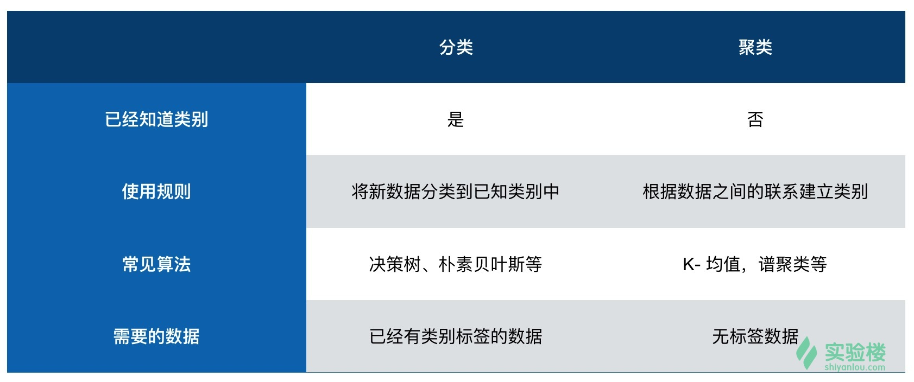
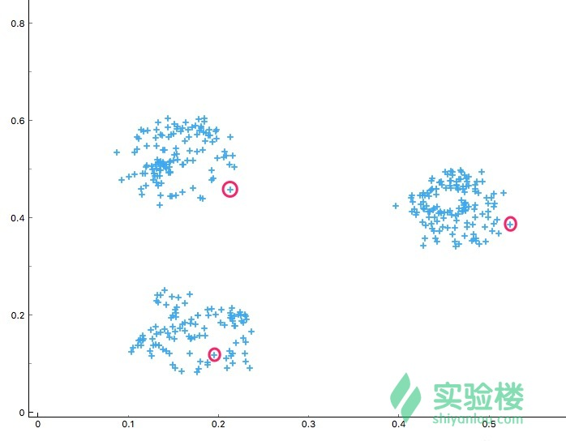

本实验为实验楼训练营课程 《Python 数据分析入门与进阶》的第六节，在该章节中我们将谈论数据分析过程中遇到的聚类问题。
知识点
- 聚类概念
- K 值选择
- K 均值聚类
- 其他聚类方法
什么是聚类？
聚类，也叫做聚类分析，它是一门对数据进行统计分析的方法。聚类过程中，我们依据对象的属性，将相似的对象归位一类。例如，下面这张图，我们可以明显感觉数据点可被聚为 4 类。这里，我们参考的聚类属性有颜色和对象间距。
从聚类的类型来讲，一般有结构性聚类、分散性聚类、密度聚类等。
其中，结构性聚类是指，结构性聚类中，我们可以从上至下或者从下至上双向进行计算。从下至上是以单个对象开始，不断与周围相近的对象进行融合，最终将全部数据分成多种类别。而从上至下算法则恰恰相反，它先将全部数据当作一个整体，然后逐渐分小。在结构性聚类中，我们的重要依据为距离。一般情况下，我们会使用欧式距离，或者曼哈顿距离来测量两个对象之间的相似程度。与结构性聚类不同，分散性聚类会一次性确定所有类别。另外，密度聚类的主要特点为将测算距离改为计算密度。
除此之外，聚类分析的算法和分类还很多。而我们这里主要是讨论一些基于距离进行聚类的方法。
为什么要聚类？
当我们拿到一些原始数据时，这些数据是没有任何规律可循的。聚类，就是发生数据之间内在联系的方法。举个形象一点的例子：动物园里有很多动物，在没有聚类的情况下，每一种动物都是单独的类别。如果我们统计每种动物特点，腿的数量、有无耳朵、皮毛颜色、有无尾巴等。最终，我们就可以使用聚类将所有的动物分成数个大类。除此之外，书籍聚类、文档聚类、房屋类型聚类等，都会使用到聚类算法。
有可能你会在分类和聚类之间疑惑。一般来讲，在一个机器学习任务或者数据分析实例中，我们会先采用聚类算法对数据进行处理。使用聚类算法对历史数据处理之后，就可以人为的给每一种类别打上标签。而这些存在标签的数据，就可以被应用到下一步的分类学习中。简而言之、在执行聚类之前，我们的数据没有任何类别可言。但在执行分类之前，我们应该已经有了类别，才能对新数据进行分类。
下面这张图，可能让你对分类和聚类理解的更加到位：

K-均值（K-Means）聚类
K-均值聚类是最常用的聚类方法之一。从它的名字来讲，K 代表最终将全部样本数据集和聚为 K 个类别。而「均值」代表在聚类的过程中，我们计算聚类中心点的特征向量时，需要采用求相邻样本点特征向量均值的方式进行。例如，我们将 X1=(x1, y1), X2=(x2, y2), X3=(x3, y3) 聚为一类时，中心点坐标 O(o1, o1) 为：o1 = (x1+x2+x3)/3, o2=(y1+y2+y3)/3。
在一个标准的 k 均值聚类过程中，我们首先要人为确定 k 值的大小，也就是聚类的数量。然后，我们会使用一种叫Forgy的方法初始化聚类，Forgy 也就是随机地从数据集中选择 k 个观测作为初始的均值点。例如，下图中，我们定 k=3，然后随机选择 3 个数据点初始化聚类。

然后，我们以这三个样本点（红色）为基准，将剩余的数据点按照与其距离最近的标准进行类别划分。
这样，就得到了通过绿色线条划分的 A, B, C 三个区域。
接下来，我们求解各区域中数据点集的中心点, 这一步也就是更新。然后得到三个紫色中心点。重复上面的步骤，得到由黄色线条划分的 D, E, F 三个区域。

重复上面的步骤，直到三个区域的中心点变化非常小或没有变化时，终止迭代。最终，就将全部数据划分为 3 了类别。
k 均值的迭代过程非常简单，但是非常有效。
K 值选择
看完上面的示例，你应该对聚类的过程比较清晰了。简而言之，完成一项聚类任务分为三步：
- 第一步：选择聚类数量，也就是 K 值的大小。
- 第二步：实施聚类算法，k-均值等。
- 第三步：对聚类结果进行人工标注和分析。
接下来，我们就来讨论一下如何选择 k 值。我们要相信，k 值的大小并不是一拍脑袋就随便选一个。一个数据集该聚为多少个类，应该有一个比较合理的选择机制。
当我们在使用 K-Means 聚类时，我们一般通过计算轮廓系数，来确定 k 值的大小。轮廓系数（Silhouette Coefficient），是聚类效果好坏的一种评价方式。轮廓系数结合内聚度（Cohesion）和分离度（Separation）两种因素，可以用来在相同原始数据的基础上用来评价不同算法、或者算法不同运行方式对聚类结果所产生的影响。
对于某一点 i，我们用 a(i) 表示 i 距离同类中其它点之间的距离的平均值，而 b(i) 表示 i到所有非同类点的平均距离，然后取最小值。于是，i 的轮廓系数计算如下：
然后，我们计算数据集中所有点的轮廓系数，最终以平均值作为当前聚类的整体轮廓系数。整体轮廓系数介于 [-1,1] ，越趋近于 1 代表聚类的效果越好。
scikit-learn 中，sklearn.metrics.silhouette_score() 方法可以用来计算所聚类数据集的轮廓系数。
接下来，我们就举一个例子来计算聚类过程中的轮廓系数，这里我们使用 three_class_data.csv 数据集用于演示，你需要先下载该文件：
wget http://labfile.oss.aliyuncs.com/courses/764/three_class_data.csv
轮廓系数计算如下：
from sklearn.cluster import k_means
from sklearn.metrics import silhouette_score
from matplotlib import pyplot as plt
import pandas as pd
# 导入数据
data = pd.read_csv("three_class_data.csv", header=0)
x = data[["x", "y"]]
# 建立模型
score = []
# 依次计算 2 到 12 类的轮廓系数
for i in range(10):
model = k_means(x, n_clusters=i + 2)
score.append(silhouette_score(x, model[1]))
plt.subplot(1, 2, 1)
plt.scatter(data['x'], data['y'])
plt.subplot(1, 2, 2)
plt.plot(range(2, 12, 1), score)
plt.show()
我们可以看到，下方左图为原数据集散点图。而右图是依次计算 2，3，……，12 类的轮廓系数折线图。右图明显看到，当k取3 时，轮廓系数最大。也就是说，推荐我们将原数据集聚为 3 类。这也印证了我们肉眼的观测结果。
其实，我们在计算轮廓系数时，已经用到了 k 均值算法，将数据集从 2 类依次变化到 12 类。我们将 k 均值算法选择 k=3 时的聚类结果绘制出来。
from sklearn.cluster import k_means
from matplotlib import pyplot as plt
import pandas as pd
# 导入数据
data = pd.read_csv("three_class_data.csv", header=0)
x = data[["x", "y"]]
# 建立模型
model = k_means(x, n_clusters=3)
# 绘图
plt.scatter(data['x'], data['y'], c=model[1])
plt.show()
同样，我们可以绘制出k-均值聚类的决策边界。
from sklearn.cluster import KMeans
from matplotlib import pyplot as plt
import pandas as pd
import numpy as np
# 导入数据
data = pd.read_csv("three_class_data.csv", header=0)
x = data[["x", "y"]]
# 建立模型
model = KMeans(n_clusters=3)
model.fit(x)
# 计算聚类过程中的决策边界
x_min, x_max = data['x'].min() - 1, data['x'].max() + 1
y_min, y_max = data['y'].min() - 1, data['y'].max() + 1
xx, yy = np.meshgrid(np.arange(x_min, x_max, .01), np.arange(y_min, y_max, .01))
result = model.predict(np.c_[xx.ravel(), yy.ravel()])
# 将决策边界绘制绘制出来
result = result.reshape(xx.shape)
plt.contourf(xx, yy, result, cmap=plt.cm.Greens)
plt.scatter(data['x'], data['y'], c=model.labels_, s=15)
# 绘制聚类中心点
center = model.cluster_centers_
plt.scatter(center[:, 0], center[:, 1], marker='p', linewidths=2, color='b', edgecolors='w', zorder=20)
plt.show()
其他聚类算法
除了我们会经常用到的 K-均值聚类算法，Scikit-learn 还为我们提供了一些常见的聚类算法。
Mini Batch K-Means Mini Batch K-Means 整体上和 K-Means 很相似，它是 K-Means 的一个变种形式。与 K-Means 不同的地方在于，其每次从全部数据集中抽样小数据集进行迭代。Mini Batch K-Means 算法在不对聚类效果造成较大影响的前提下，大大缩短了计算时间。
Affinity Propagation Affinity Propagation 又被称为亲和传播聚类。Affinity Propagation 是基于数据点进行消息传递的理念设计的。与 K-Means 等聚类算法不同的地方在于，亲和传播聚类不需要提前确定聚类的数量，即 K 值。但是运行效率较低。
Mean Shift MeanShift 又被称为均值漂移聚类。Mean Shift 聚类的目的是找出最密集的区域， 同样也是一个迭代过程。在聚类过程中，首先算出初始中心点的偏移均值，将该点移动到此偏移均值，然后以此为新的起始点，继续移动，直到满足最终的条件。Mean Shift 也引入了核函数，用于改善聚类效果。除此之外，Mean Shift 在图像分割，视频跟踪等领域也有较好的应用。
Spectral Clustering Spectral Clustering 又被称为谱聚类。谱聚类同样也是一种比较常见的聚类方法，它是从图论中演化而来的。谱聚类一开始将特征空间中的点用边连接起来。其中，两个点距离越远，那么边所对应的权值越低。同样，距离越近，那么边对应的权值越高。最后，通过对所有特征点组成的网络进行切分，让切分后的子图互相连接的边权重之和尽可能的低，而各子图内部边组成的权值和经可能高，从而达到聚类的效果。谱聚类的好处是能够识别任意形状的样本空间，并且可以得到全局最优解。
Agglomerative Clustering Agglomerative Clustering 又被称为层次聚类。层次聚类算法是将所有的样本点自下而上合并组成一棵树的过程，它不再产生单一聚类，而是产生一个聚类层次。层次聚类通过计算各样本数据之间的距离来确定它们的相似性关系，一般情况下，距离越小九代表相似度越高。最后，将相似度越高的样本归为一类，依次迭代，直到生成一棵树。由于层次聚类涉及到循环计算，所以时间复杂度比较高，运行速度较慢。
Birch Birch 是英文 Balanced Iterative Reducing and Clustering Using Hierarchies 的简称，它的中文译名为「基于层次方法的平衡迭代规约和聚类」，名字实在太长。Birch 引入了聚类特征树（CF树），先通过其他的聚类方法将其聚类成小的簇，然后再在簇间采用 CF 树对簇聚类。Birch 的优点是，只需要单次扫描数据集即可完成聚类，运行速度较快，特别适合大数据集。
DBSCAN DBSCAN 是英文 Density-based spatial clustering of applications with noise 的简称，它的中文译名为「基于空间密度与噪声应用的聚类方法」，名字同样很长。DBSCAN 基于密度概念，要求聚类空间中的一定区域内所包含的样本数目不小于某一给定阈值。算法运行速度快，且能够有效处理特征空间中存在的噪声点。但是对于密度分布不均匀的样本集合，DBSCAN 的表现较差。
接下来，我们利用上面的数据集对 8 种不同的聚类方法，来一次简单的横向对比。
from sklearn import cluster
from matplotlib import pyplot as plt
import pandas as pd
import numpy as np
import time
# 导入数据
data = pd.read_csv("three_class_data.csv", header=0)
x = data[["x", "y"]]
# 对聚类方法依次命名
cluster_names = ['KMeans', 'MiniBatchKMeans', 'AffinityPropagation', 'MeanShift', 'SpectralClustering', 'AgglomerativeClustering', 'Birch', 'DBSCAN']
# 确定聚类方法相应参数
cluster_estimators = [
cluster.KMeans(n_clusters=3),
cluster.MiniBatchKMeans(n_clusters=3),
cluster.AffinityPropagation(),
cluster.MeanShift(),
cluster.SpectralClustering(n_clusters=3),
cluster.AgglomerativeClustering(n_clusters=3),
cluster.Birch(n_clusters=3),
cluster.DBSCAN()
]
# 为绘制子图准备
plot_num = 1
# 依次运行不同的聚类方法
for name, model in zip(cluster_names, cluster_estimators):
tic = time.time()
# 建立模型
model.fit(x)
# 绘制子图
plt.subplot(2, len(cluster_estimators) / 2, plot_num)
# 计算聚类过程中的决策边界
x_min, x_max = data['x'].min() - 1, data['x'].max() + 1
y_min, y_max = data['y'].min() - 1, data['y'].max() + 1
xx, yy = np.meshgrid(np.arange(x_min, x_max, .01), np.arange(y_min, y_max, .01))
if hasattr(model, 'predict'):
result = model.predict(np.c_[xx.ravel(), yy.ravel()])
# 将决策边界绘制绘制出来
result = result.reshape(xx.shape)
plt.contourf(xx, yy, result, cmap=plt.cm.Greens)
plt.scatter(data['x'], data['y'], c=model.labels_, s=15)
# 判断方法中是否由 cluster_centers_ 聚类中心参数，并执行不同的命令
if hasattr(model, 'cluster_centers_'):
center = model.cluster_centers_
plt.scatter(center[:, 0], center[:, 1], marker='p', linewidths=2, color='b', edgecolors='w', zorder=20)
# 计算算法运行时间
toc = time.time()
cluster_time = (toc - tic)*1000
# 绘图
plt.title(str(name) + ", " + str(int(cluster_time)) + "ms")
plot_num += 1
plt.show()
结果如下：

我们可以看出，结果比较理想的有：KMeans, MiniBatchKMeans, MeanShift, SpectralClustering, AgglomerativeClustering。而 Birch 和 DBSCAN 在默认参数下只得到一个有效类别，AffinityPropagation 却得到了太多的类别。从聚类用时来看，AgglomerativeClustering 聚类效果不错，且用时较短。
聚类算法选择
面对上面的对比结果，并不是某几个算法不好，而是每一种方法适用的情况都各不相同。下面，我们就简单地说明一下，聚类算法的选择步骤：
1. 如果已知 K 值，即聚类的数量：
- 样本数量 < 1 万，首选 Kmeans，效果不好再选择 SpectralClustering。
- 样本数量 > 1 万，首选 MiniBatch Kmeans。
2. 如果 K 值未知：
- 样本数量 < 1 万，首选 MeanShift。
- 样本数量 > 1 万，依靠经验灵活应对了。
实验总结
本节课我们了解了什么是聚类，以及常见的聚类算法。其中，我们详细的介绍了 K-均值聚类方法，对它的聚类流程进行了全面解析。为了帮助初学者，课程中涉及的示例都较为简单，课后可以使用 scikit-learn 中提供的 iris 数据集或者 digits 手写字体识别数据集进一步加深对聚类的理解和认识。